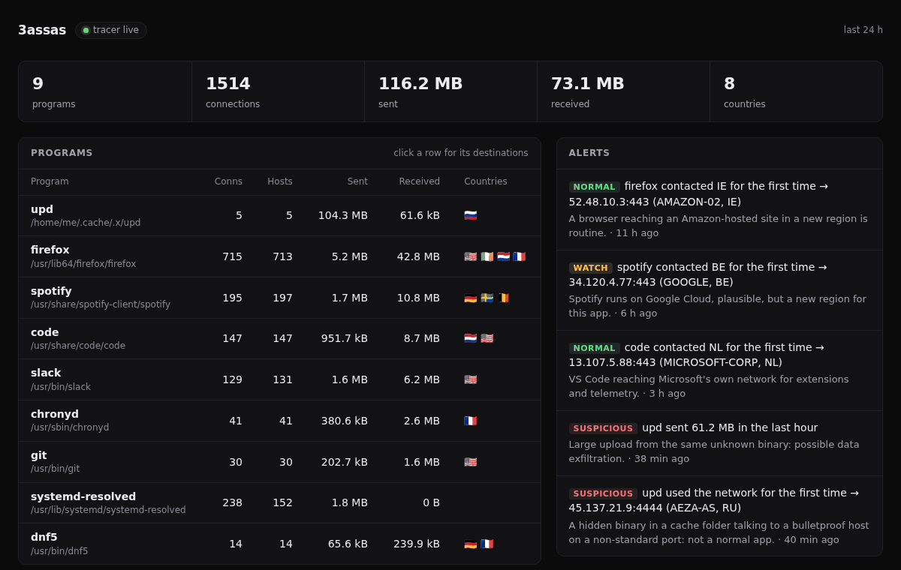

From inside the kernel
eBPF hooks on TCP state changes and UDP sends catch every connection with its executable, even hardcoded IPs, QUIC and apps that skip your resolver.
3assas watches every outbound connection from inside the kernel, names it, and tells you when something new phones home.
$ curl -fsSL https://raw.githubusercontent.com/onezdtr/3assas/main/get.sh | sudo sh
Firewalls and DNS blockers see addresses or names. 3assas sees the program behind each one, because it asks the kernel, not the network.
eBPF hooks on TCP state changes and UDP sends catch every connection with its executable, even hardcoded IPs, QUIC and apps that skip your resolver.
DNS answers are read as they arrive, so 140.82.112.5 becomes api.github.com, GitHub Inc., US. Bytes sent and received, exact.
It learns your machine for a day, then flags a program's first connection, a new country or a big upload. An AI judges each one; Telegram gets what matters.

The local web page on 127.0.0.1:4545. Demo data: a hidden binary uploading to an unknown host gets flagged, a browser reaching a new CDN does not.
Loopback workloads with the tracer stopped and running, alternated every round, median of seven. Apple M1, Linux 7.1. The script ships with the code.
Installs two services and a page on 127.0.0.1. Your connection history never leaves the machine.
$ curl -fsSL https://raw.githubusercontent.com/onezdtr/3assas/main/get.sh | sudo sh